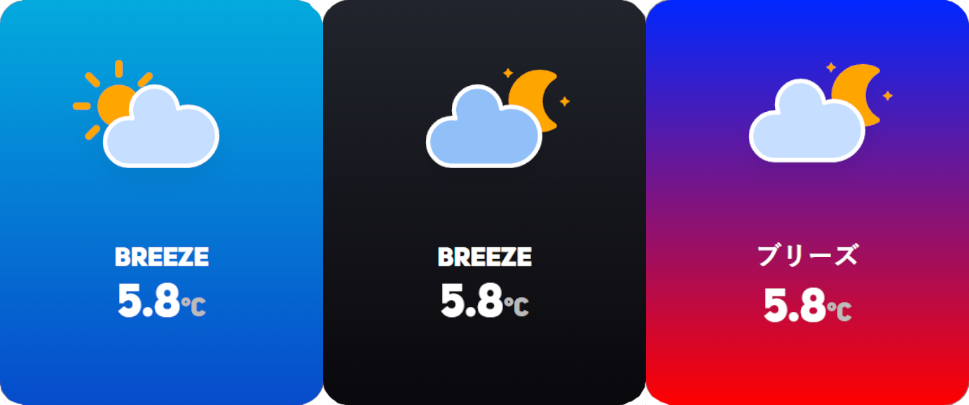
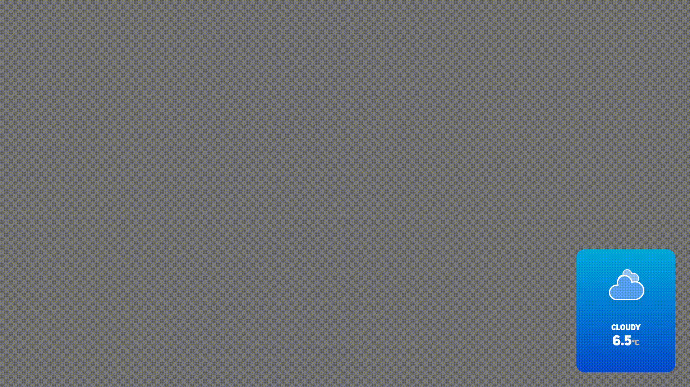
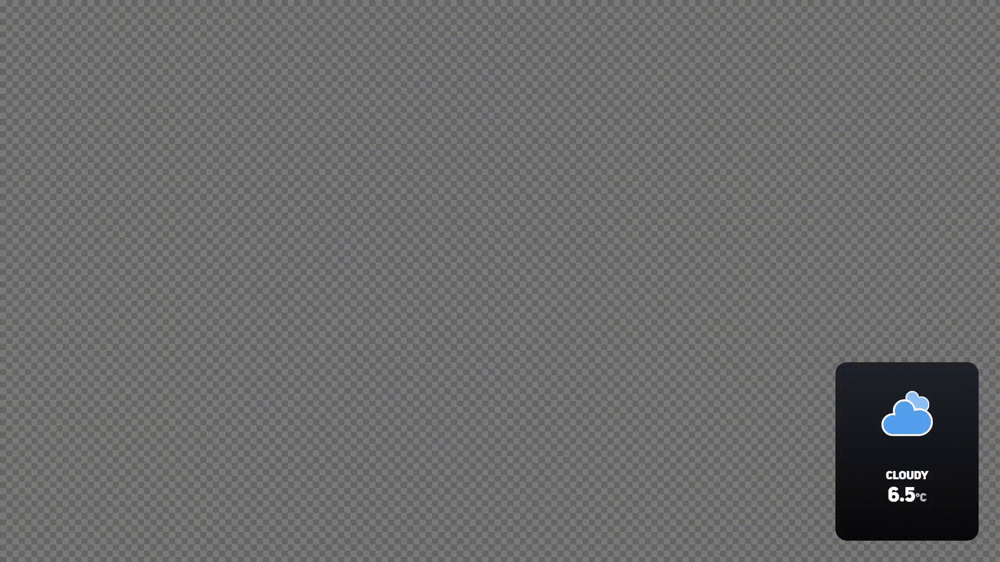

Configuration
OBS Studio
1. Make a browser source in OBS Studio with the settings: Width = 400, Height = 500.
2. Put the URL of the widget in the Browser Source, find URL here.
Widget
Put this URL into OBS: https://ik1497.github.io/Extensions/Weather/
Day
Night
URL Parameters
Font
Location
Widget
Misc
Make it your own with URL Parameters! This example image below uses:
http://ik1497.github.io/Extensions/Weather/?lat=52.52&lon=13.419998&lang=ja&animation-off&force-time=night&background=linear-gradient(0deg, rgba(255,0,0,1) 0%, rgba(0,39,255,1) 100%)
For any suggestions about this widget or any theme feel free to send me a DM on discord or open an issue.